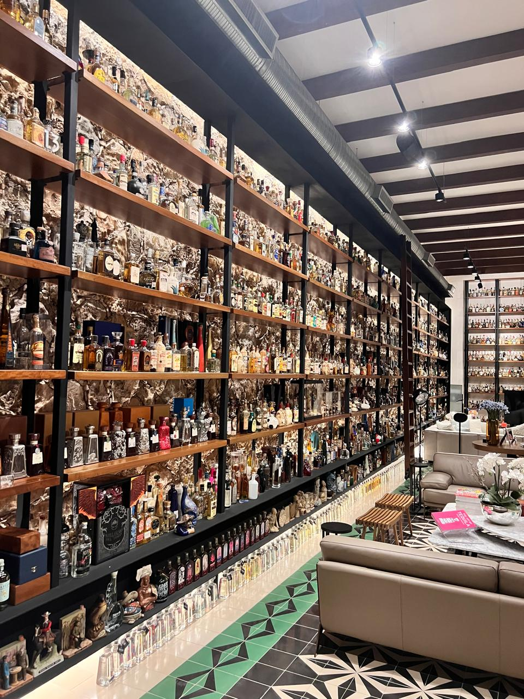
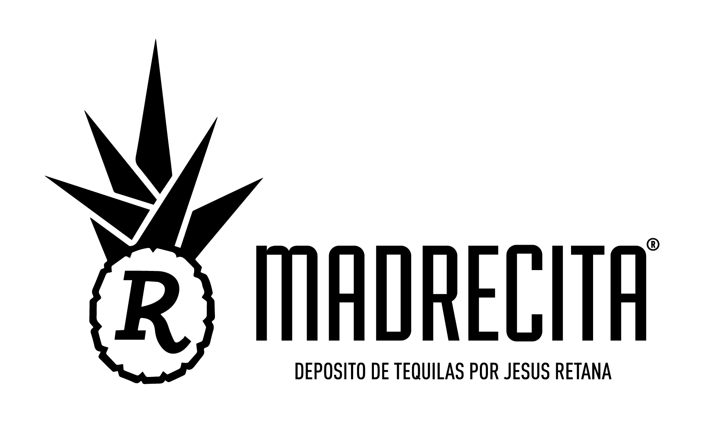

MI ITINERARIO
Plan personal guardado en este navegador. No es una reserva.
Seis botellas para empezar.
Un archivo entero por descubrir.
Toca una zona para ver sus productores y abrir los pasaportes de sus botellas.
1,370 fichas tienen región asignada. Tres fichas de Santo Tomás siguen en la cava sin región confirmada. El vínculo geográfico procede del lugar mencionado en el campo productor; no certifica la planta ni el origen del agave.
El tamaño indica cuántas fichas coinciden. Los lugares proceden del campo de productor; el diagrama no representa distancias ni el origen del agave. Ver cobertura ↓
La visita continúa en el comedor. Prepara una sobremesa alrededor de las piezas que acabas de descubrir.

Elige un hilo para la conversación. Puedes añadir piezas desde los pasaportes de La Cava.
Plan personal guardado en este navegador. No es una reserva.
El archivo original conserva una R serif dentro de una piña de agave. La versión digital simplifica el contorno y los espacios interiores para que siga reconociéndose en el teléfono.

La escala de la sala digital es aproximada. Las fotografías guían materiales y proporciones; las estaciones señalan una propuesta de exposición, no una ubicación física verificada.
Consultar los fotogramas del video original →Descargar análisis del Excel y el ZIP ↓